We conduct fundamental research on earth and planetary sciences of Myanmar and surrounding regions to better understand the nature of planet and sustainable development of clean, green and safer environment.The education programs and activities of the institute provide Diploma/Certificate, Undergraduate and Graduate programs for students and learners who are preparing for scientific and technical careers in academic, industry, government, and non-government organizations, accordingly the corresponding circumstances and strive for various professional development programs for faculty members individually and collectively without intervening academic freedom, with certainty the courses/programs to be research oriented and standard quality, destined for the skills of problem solving, critical thinking, communication, and strong interactions.
Natural Diasters (ND)
The ND research division aims to conduct the researches related to the natural disasters such as floods, landslides, cyclone, earthquakes, tsunami etc. which happen frequently in Myanmar.
Flood
The country had been experienced by all sorts of floods as river floods, flash floods and storm surge, and examples are the 2008 cyclone Nargis, 2015 flash floods, the annual river floods. Since flooding is one of the major disasters in Myanmar and 12 major floods had already happened during 1900-2000. Major cities, towns and economically important places are located nearby major rivers such as Ayeyarwaddy, Chindwin, Thanlwin and Sittaung, etc. In June 2015, heavy rain caused floods and landslides in several parts of the country and Cyclone Komen brought strong winds and additional rains on 30 July, resulting in widespread flooding across 12 of the country's states and regions (Ayeyarwady, Bago, Chin, Kachi, Kayin, Magway, Mandalay, Mon, Rakhine, Sagaing, Shan and Yangon). These floods killed 125 peoples and also caused 1.7 million peoples temporarily displaced, affecting 9 million people across 12 states and regions. The floods destroyed 15,000 homes, and more than 840,000 acres of agricultural crops. Since 2015, Myanmar faced floods every year across the country.
The research areas to be conducted include construction of flood database, developing numerical weather/precipitation models, flood modelling, and water level prediction. Flood hazard assessments will be carried out for different recurrence interval, representing in terms of flood intensity referring to the combination of flood depth and horizontal flood extent, flow velocity and flood duration, etc. Estimation of design discharge by applying either frequency analysis or rainfall-runoff modelling or both; Statistical discharge frequency analysis; Hydraulic modeling and floodplain mapping are the main researches to be conducted by the research division.
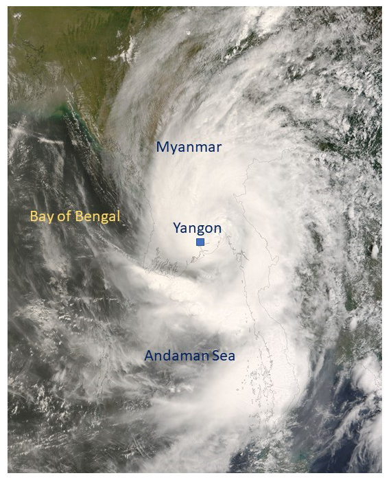
In early May 2008, Cyclone Nargis passed over Myanmar after forming in the Bay of Bengal as a Category 4 cyclone wit sustained winds of 210 kilometers per hour at one point. (Source: NASA).
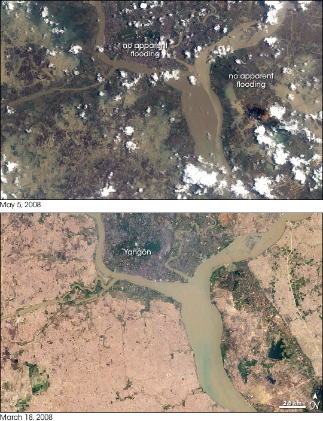
In early May 2008, Cyclone Nargis passed over Myanmar after forming in the Bay of Bengal as a Category 4 cyclone with sustained winds of 210 kilometers per hour at one point. (Source: NASA).
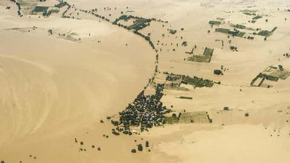
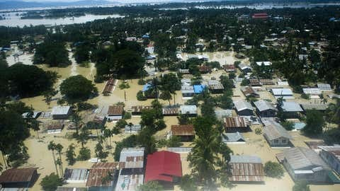
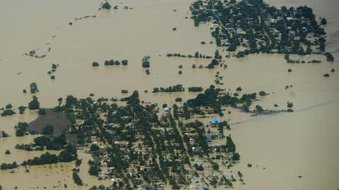
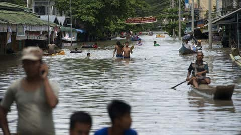
In early May 2008, Cyclone Nargis passed over Myanmar after forming in the Bay of Bengal as a Category 4 cyclone with sustained winds of 210 kilometers per hour at one point. (Source: NASA).
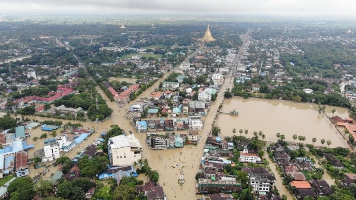
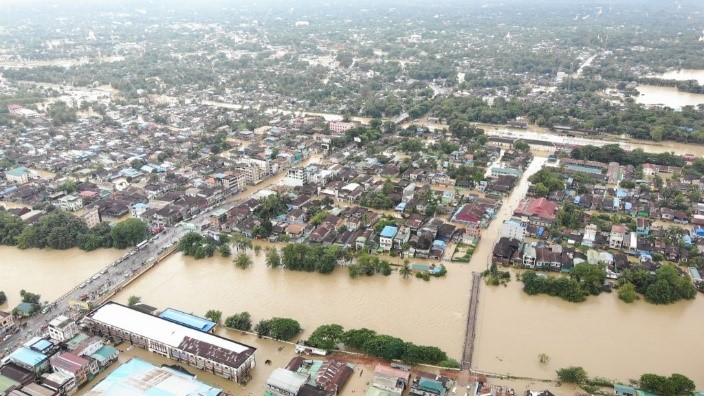
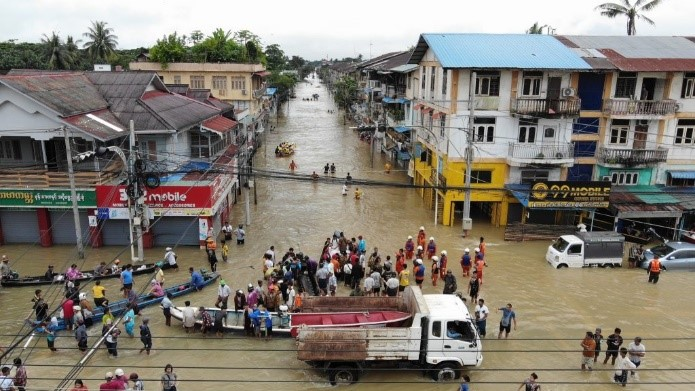
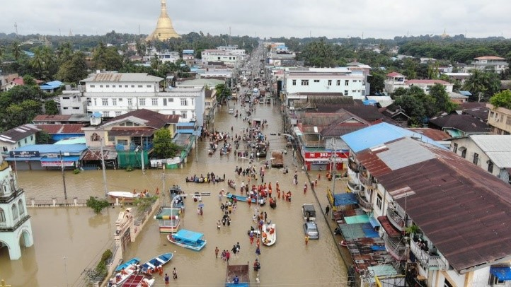
Floods in Bago, Myanmar, October 2023 (Photos: Myanmar Fire Services Department)
Land Slides
One of the natural disasters frequently happened in the country is landslides, rock slides, and debris flow, and the most prominent events recent years are 2015 Hakha landslide, and 2019 Paung Landslide. As the cyclone Komen caused severe floods around Myanmar, due to the heavy rain, the capital of Chin State, Hakha was experienced the major landslides around the city. About 200 houses were destroyed and more than 2000 people were evacuated due to the combination of landslides and heavy rain (source-http://khonumthung.org/). Due to the heavy monsoon rains in Paung Township, Mon State, the large landslide hit the area, resulting 52 deaths, and 25 homes and five vehicles buried (source- The Irrawaddy). The other prominent landslides happened in Launglon Township, Tanintharyi Region on August 24 and 26, 1997. The affected areas include many villages- Pan Nyet, Tizit and Maungmagan. Due to these landslides, above 100 deaths and several tens of people injured, and more than 150 houses were completely destroyed or totally buried by the debris.
In Myanmar, causes of landslides in the country are particularly by heavy rains, and secondly by earthquakes. For land use plan and management, civil engineering works, and risk reduction processes, landslide inventories and hazard maps play the important roles, and therefore the ND research division is going to conduct the landslide inventories construction as the national level. As floods, in the country there is no landslide inventories in different levels, we will develop those by various methods for different physiographic, geologic and climate settings of the country. Moreover, this is the most important step and information for further processes such as quantitative zoning of landslide susceptibility, and hazard and risk assessments. The landslide identification and collection process include the intensive literature reviews on historical documents, scientific papers and technical reports, international and local news, field surveys, and image interpretation as LiDAR, SAR, etc.
Numerical landslide modelling and landslide zone mapping by statistical approach and remote sensing techniques for different scales and return periods are the major planned research works by the ND research group.
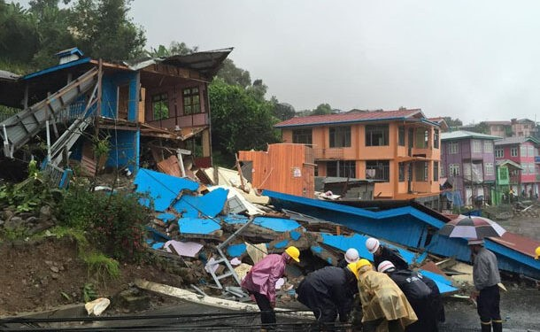
Damaged houses resulted by the 2015 Hakha Landslide, Chin State (Photo: The Irrawaddy, VOA News)
Damaged houses resulted by the 2015 Hakha Landslide, Chin State (Photo: The Irrawaddy, VOA News)
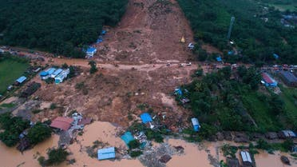
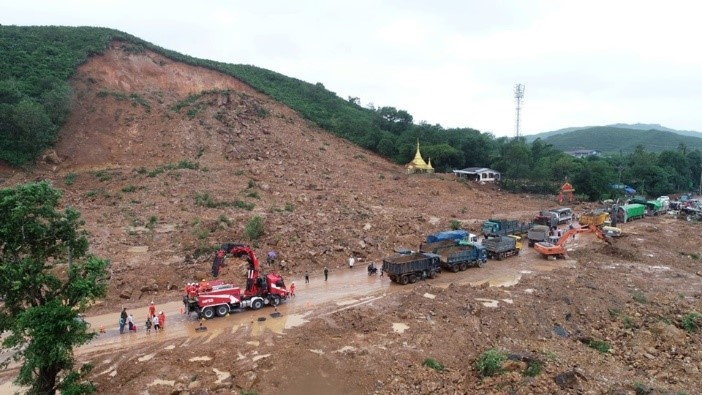
The aerial view showing the August 9, 2019 landslide in Thalphyugone village in Paung township. At least 41 people have died after heavy rain triggered a massive landslide. (Photo: AFP and Myanmar Fire Services Department)
Earthquakes
Earthquake, its primary and secondary hazards are other areas focused by the ND research division. Based on various sorts records, historic and instrumental records, Myanmar had had experiences on several strong (magnitude 6 – 6.9) and major (magnitude 7.0 – 7.9) earthquakes which include tsunamigenic event. The largest event is assumed as the magnitude around 8.0, Burma (Maymyo) Earthquake happened in 1912 that was originated by Kyaukkyan Fault, and the 1839 Ava earthquake is regarded as the second largest event based on the current preliminary results, and its magnitude is probably around 7.6 and the other is 1931 (M7.6) Myitkyina Earthquake. The most significant events are the earthquake series of four consecutive events caused by the right-lateral strike-slip Sagaing Fault which are the magnitude 7.3 happened along the Sagaing Fault are Aug. 8 1929 (M7.0) Swa Earthquake, May 5 1930 (M7.3) Bago Earthquake, Dec. 4 1930 (M7.3) Phyu Earthquake and Jan 27. 1931 (M 7.6) Myitkyina Earthquake. Among them, the Bago Earthquake caused 550 deaths and extensive damages in Bago and Yangon. The most recent events are the March 24 2011 (M6.8) Tarlay Earthquake, the November 11 2012 (M6.8) Thabeikkyin Earthquake, and the August 24 2016 (M6.8) Chauk Earthquake.
The ND research group are currently carrying out the research works related to the active fault studies of the Sagaing Fault (Naypytaw Segment, Thabeikkyin-Singu Segment), Shan Scarp Fault, Kyaukkyan Fault, and Namma Fault. The paleoseismic investigations (trenching studies), GPS survey, LiDAR and InSAR images studies on active tectonics, seismic interpretation, etc. are the main themes of the research group. Seismic hazard mapping of different levels such as national, regional level, and city level for major cities are going to be carried out by using different methods as probabilistic and deterministic approaches, and ground motion modelling etc.
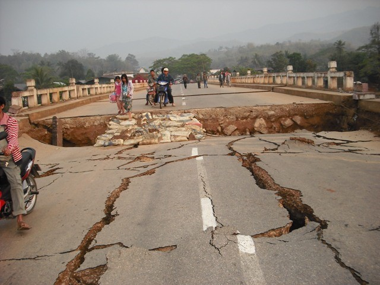
Damages caused by the 1839 Ava Earthquake (left) and 2011 Tarlay Earthquake (right)
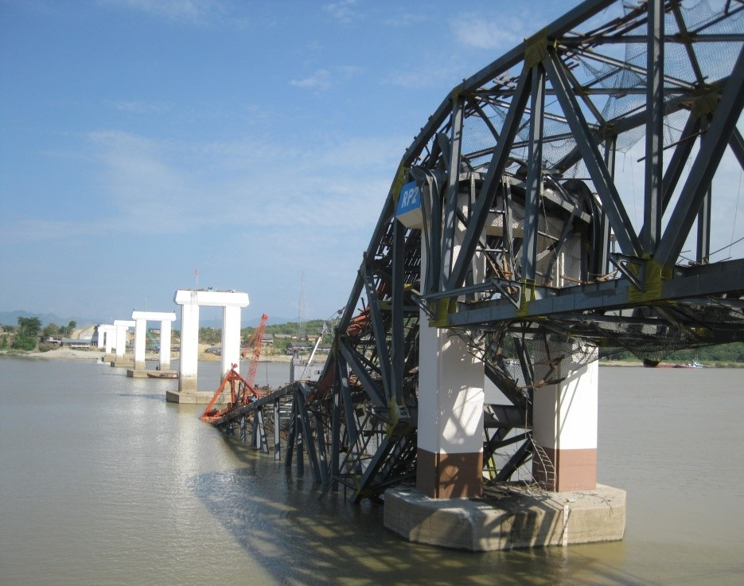
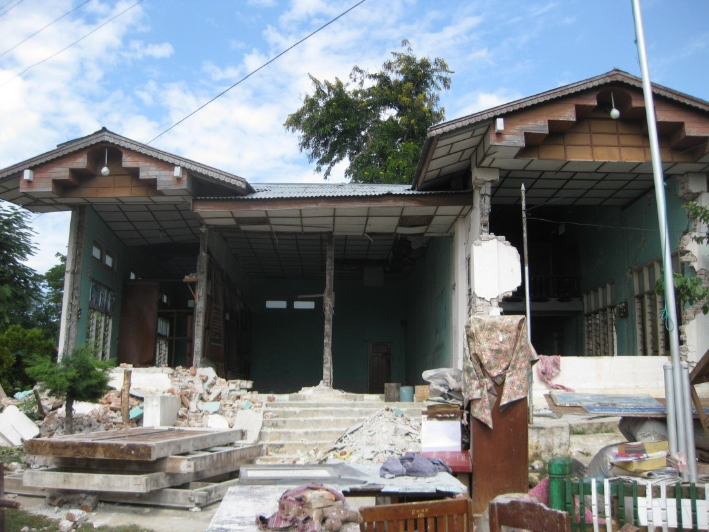
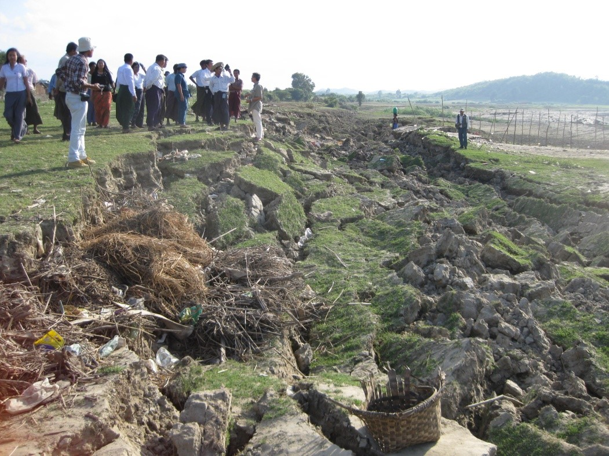
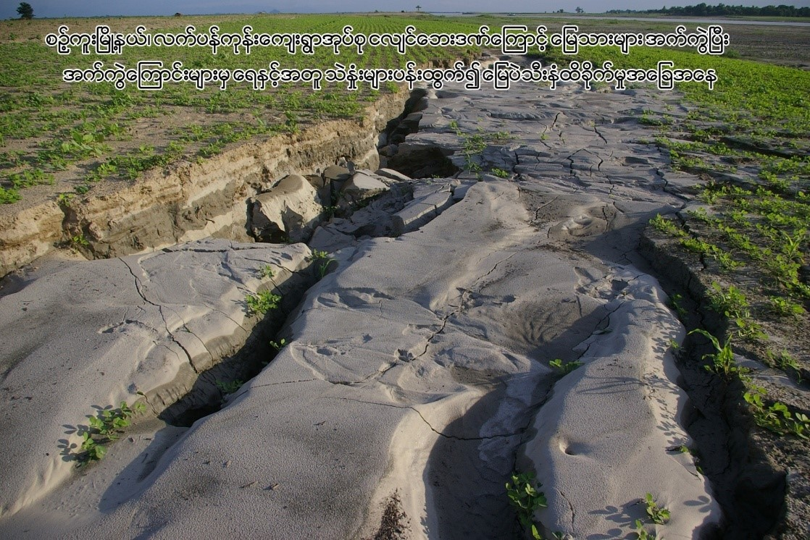
Primary damages (the upper two), and the secondary effects (the lower two) by the 6.8Mw 2012 Thabeikkyin Earthquake.
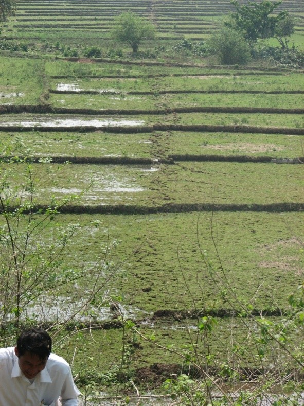
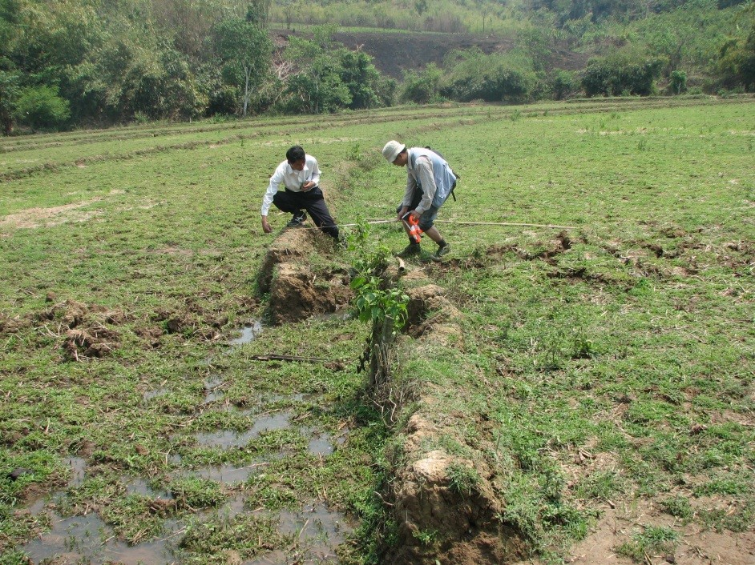
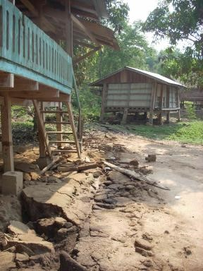
Primary damages (the upper two), and the secondary effects (the lower two) by the 6.8Mw 2012 Thabeikkyin Earthquake.
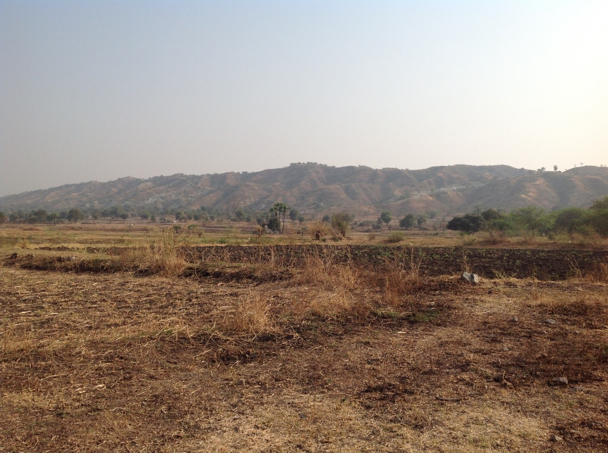
Damaged houses resulted by the 2015 Hakha Landslide, Chin State (Photo: The Irrawaddy, VOA News)
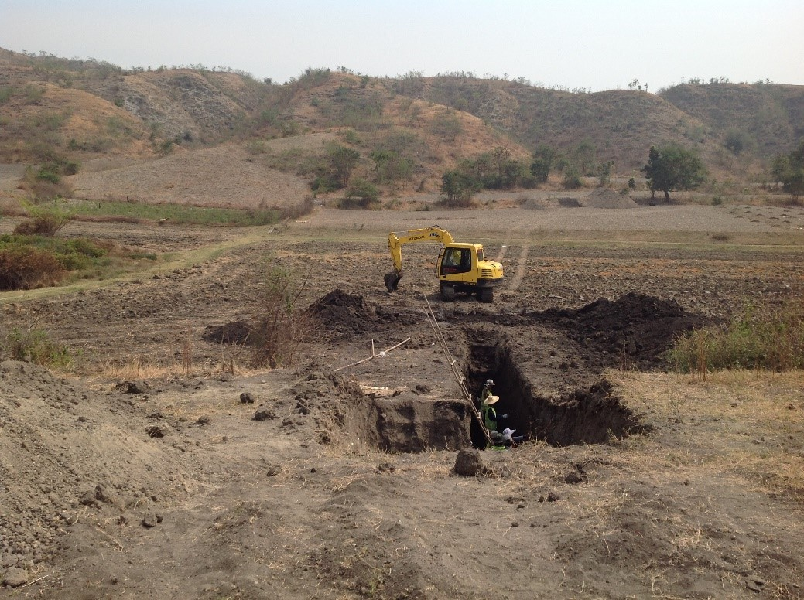
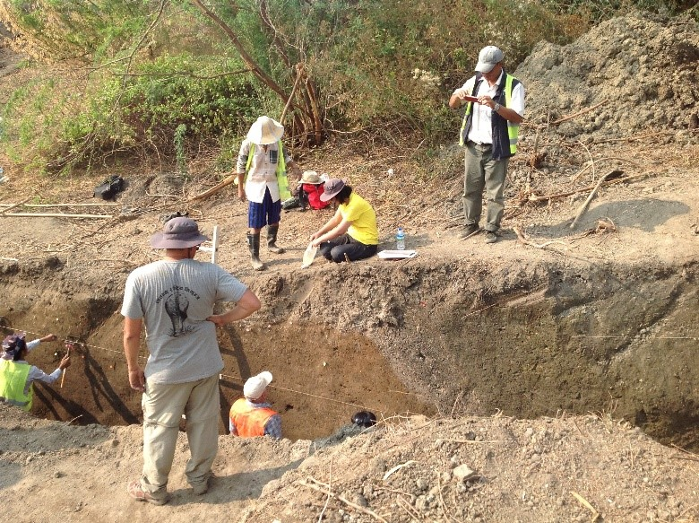
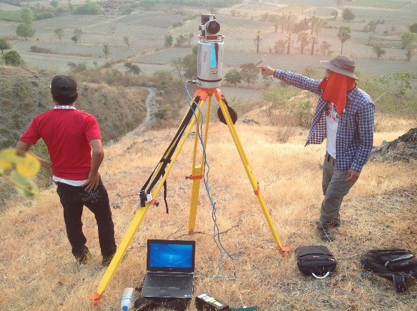
The aerial view showing the August 9, 2019 landslide in Thalphyugone village in Paung township. At least 41 people have died after heavy rain triggered a massive landslide. (Photo: AFP and Myanmar Fire Services Department)